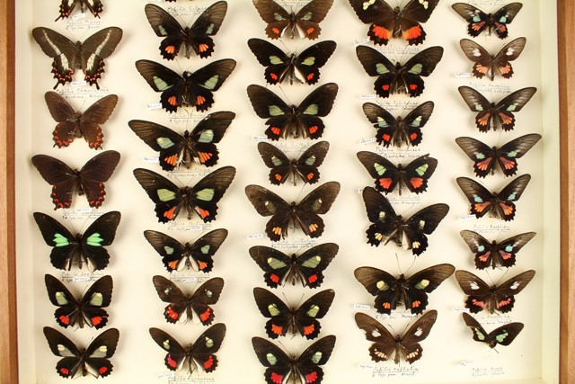

ZB-0244-v2 · authoring_candidate

{
"id": "ZB-0244-v2",
"blockers": [],
"review": [],
"advisory": [],
"metrics": {
"width": 2000,
"height": 1333,
"mode": "RGB",
"exif_orientation": 1,
"frame_count": 1,
"global_640_proxy": {
"contrast_p90_p10": 214.0,
"gray_entropy_bits": 7.436645611748808,
"edge_fraction_16": 0.16437974456134175
},
"object_count": 22,
"objects_per_MP": 8.252063015753938,
"class_count": 3,
"known_fraction": 1.0,
"repeated_classes": 2,
"spatial_entropy_4x4": 0.8421306319320516,
"median_bbox_short_px": 175.0,
"p10_bbox_short_px": 175.0,
"edge_touching_count": 0,
"nearcolor_pair_count": 12,
"different_class_neighbor_pairs": 23,
"nearcolor_neighbor_fraction": 0.5217391304347826,
"bbox_overlap_pair_count": 2,
"han_text_coverage": 0.0,
"distinct_dependency_regions": 6,
"effective_counterfactuals": 2
},
"source": {
"kind": "real_photo",
"url": "https://commons.wikimedia.org/wiki/File:JJ_Joicey_cabinet_Haslemere_Educational_Museum_drawer_no_14.jpg",
"license_url": "https://creativecommons.org/licenses/by-sa/4.0/",
"authorization": "verified",
"scene_id": "commons:87024371:Joicey-drawer14",
"author": "Haslemere Educational Museum",
"evidence": "source.json; source_page.html"
},
"difficulty_status": "no_complete_failure_recorded",
"annotation_provenance": "author_manual_on_native_original",
"preview": "001.jpg",
"nearcolor_pairs": [
{
"a": "A5",
"b": "A4",
"deltaE76": 4.738739984170624
},
{
"a": "B4",
"b": "A2",
"deltaE76": 1.7448106490188091
},
{
"a": "B4",
"b": "A3",
"deltaE76": 3.085381410016886
},
{
"a": "B4",
"b": "A4",
"deltaE76": 10.35736243350701
},
{
"a": "B4",
"b": "B3",
"deltaE76": 7.984063579272368
},
{
"a": "B5",
"b": "A5",
"deltaE76": 10.81727143135051
},
{
"a": "B5",
"b": "B4",
"deltaE76": 1.5475466342819297
},
{
"a": "C3",
"b": "B4",
"deltaE76": 9.025374568940153
},
{
"a": "C4",
"b": "B4",
"deltaE76": 7.007094262539255
},
{
"a": "C4",
"b": "B5",
"deltaE76": 5.813764081883172
},
{
"a": "C5",
"b": "C4",
"deltaE76": 4.836490801037411
},
{
"a": "D2",
"b": "D1",
"deltaE76": 11.897958248705578
}
],
"overlap_candidates": [
{
"a": "D4",
"b": "D3",
"iom": 0.18163809523809524
},
{
"a": "D6",
"b": "D5",
"iom": 0.1657142857142857
}
],
"roi_metrics": [
{
"id": "column_A",
"file": "001_roi1.png",
"contrast_p90_p10": 222.0,
"gray_entropy_bits": 7.038376331087786,
"edge_fraction_16": 0.10974129264599214
},
{
"id": "column_B",
"file": "001_roi2.png",
"contrast_p90_p10": 216.0,
"gray_entropy_bits": 7.226855646121239,
"edge_fraction_16": 0.12703238786092771
},
{
"id": "column_C",
"file": "001_roi3.png",
"contrast_p90_p10": 219.0,
"gray_entropy_bits": 7.000839572253075,
"edge_fraction_16": 0.1156030512883608
},
{
"id": "column_D",
"file": "001_roi4.png",
"contrast_p90_p10": 203.0,
"gray_entropy_bits": 7.466889276074577,
"edge_fraction_16": 0.12665824333881645
},
{
"id": "lower_boundary",
"file": "001_roi5.png",
"contrast_p90_p10": 207.0,
"gray_entropy_bits": 6.460868600376452,
"edge_fraction_16": 0.07957923382876282
},
{
"id": "A5_small_spots",
"file": "001_roi6.png",
"contrast_p90_p10": 203.0,
"gray_entropy_bits": 7.1179062642496564,
"edge_fraction_16": 0.1415643601190476
}
],
"reasoning_metrics": {
"node_count": 19,
"max_depth": 8,
"branch_nodes": 9,
"join_nodes": 6,
"multi_visual_join_nodes": 6,
"output_count": 6,
"outputs_with_visual_ancestry": 6,
"output_visual_coverage": 1.0,
"state_nodes": 0,
"parameter_nodes": 3,
"output_evidence_regions": {
"Q1": [
"A5_small_spots",
"column_A",
"column_B",
"column_C",
"column_D",
"lower_boundary"
],
"Q2": [
"A5_small_spots",
"column_A",
"column_B",
"column_C",
"column_D",
"lower_boundary"
],
"Q3": [
"A5_small_spots",
"column_A",
"column_B",
"column_C",
"column_D",
"lower_boundary"
],
"Q4": [
"A5_small_spots",
"column_A",
"column_B",
"column_C",
"column_D",
"lower_boundary"
],
"Q5": [
"A5_small_spots",
"column_A",
"column_B",
"column_C",
"column_D",
"lower_boundary"
],
"Q6": [
"A5_small_spots",
"column_A",
"column_B",
"column_C",
"column_D",
"lower_boundary"
]
}
},
"measurement_margins": [
{
"id": "membership_y_window",
"ratio": 4.0,
"unit": "px"
}
],
"platform_points": [
{
"xy": [
580,
1015
],
"label": "A5前翅只剩零星小点与鳞片，F=0"
},
{
"xy": [
1319,
814
],
"label": "C4后翅奶油色斑，H=0"
},
{
"xy": [
1650,
992
],
"label": "D6纯白短斑，F=0；需与上方青绿主斑区分"
}
],
"evaluation_counts": {
"correct": 0,
"incorrect": 0,
"timeout": 0,
"infra_error": 0,
"partial": 0
},
"decision": "authoring_candidate"
}